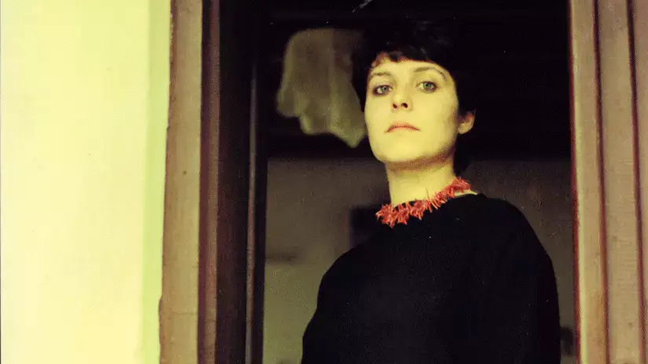

Nilgün Marmara
Tarih: 4.06.2022 - Yazar: Esra Altun
İstanbul'un Kadıköy ilçesinde dünyaya geldi. Göçmen bir ailenin kızı olan Nigün Marmara'nın annesi Vidinli Perihan Hanım, babası yönetim koordinatörü Plevneli Fikri Bey'dir. Kadıköy Gazi Mustafa Kemal Paşa İlkokulu ve Kadıköy Maarif Kolejinde okudu. Annesi Perihan Hanım zengin bir kütüphane oluşturdu. Marmara, Maarif Koleji yıllarında çok iyi bir yabancı dil eğitimi gördü; roman, şiir, inceleme gibi pek çok türde kitap okuma fırsatı buldu. Maarif Kolejinin ardından İstanbul Üniversitesi Türk Dili ve Edebiyatı bölümüne girdi; ama üniversitedeki siyasi gruplardan rahatsızlık duydu. Türkoloji'de sanatçı olunamayacağını düşündü ve sınava yeniden girmeye karar verdi. Sınava hazırlandığı süreç içinde bir holdingde yönetici asistanlığı yaptı; ayrıca yazın Marmaris'teki Turhan Oteli'nde de çalıştı. İngiliz Dili ve Edebiyatı Bölümünü kazandı. 1985 yılında İstanbul Üniversitesi İngiliz Dili ve Edebiyatı Bölümünden "Sylvia Plath'ın Şairliğinin İntiharı Bağlamında Analizi" adlı bitirme teziyle mezun oldu. Nilgün Marmara Plath'ın bütün eserlerini okudu ve ondan büyük ölçüde etkilendi. Bir müddet AnaBritannica ansiklopedisinde görev yaptı. İngilizce dersleri verdi. Üniversite yıllarında ev toplantılarında tanıştığı Kağan Önal ile evlendi. Boğaziçi Üniversitesinde akademisyen olarak kalmak istediyse de olmadı. Mezun olduktan sonra Mısır Konsolosluğunda ve bir reklam ajansında çalışmayı denedi. 1985 yılının sonlarında eşinin işi dolayısıyla birlikte Libya'ya gitti. Burada sanat, felsefe, edebiyat ve psikoloji ile ilgili kitaplar okuma fırsatı buldu. Ayrıca çok sayıda şiir yazdı ve arkadaşlarıne yolladı. Bir tiyatro metninin yanı sıra Kırmızı Kahverengi Defter (1992) kitabında yer alan "İzi Kazınmış Aynada Yüzyüze Geldiler" adlı kısa hikâyeyi de Libya'da bulunduğu sıralarda yazdı. Libya'daki çöl havası Marmara'nın psikolojisini olumsuz etkiledi. 1986'da eşiyle birlikte tekrar İstanbul'a döndü. Hastalığı iyice ilerledi ve çevresiyle olan ilşkileri bozulmaya başladı. Sağlık durumu herhangi bir işte çalışmasını engelledi. Bipolar bozukluğu da olan şair, tedavi olmayı reddetti. Esasen çok sosyal ve sevilen biri olan Marmara, psikolojik durumunun kötüleşmesiyle birlikte paronoid sanrılar görmeye başladı; çevresindeki herkesi, ailesini dahi düşman olarak algılamaya başladı; izlendiğini zannetti ve kişilerarası ilişkilerinde sorunlar yaşadı. 13 Ekim 1987‟de depresif epizotlarının birinde yakınlarına bir özür mektubu yazdıktan sonra kullanması gereken ilaçların hepsini içmeye kalkışmış; ama bunun yerine kendisini Kızıltoprak'taki evinin penceresinden boşluğa bırakmıştır. Öldüğünde 29 yaşında olan Nilgün Marmara'nın mezarı Karacaahmet'tedir.
İntiharı hakkındaki söylentiler bir kenara bırakılırsa Asiltürk, şairin intihar etmesinin şiirleri hakkında konuşmayı ve şirine tanımlayıcı bir kimlik çizmeyi zorlaştırdığını belirtmiş ve meseleye ihtiyatlı yaklaşmak gerektiğini vurgulamıştır: "Onun şiir anlayışını, hakkında bir mezuniyet tezi yazdığı ve dünyadan kendi isteğiyle ayrılma bakımından ortak bir kaderi paylaştığı Amerikalı kadın şair Sylvia Plath'e benzetenler olmuştur. Bu belirlemeye ihtiyatlı yaklaşmak ve aradaki farkı belirtmek bakımından, Marmara'nın şiirlerinde imgelerin daha çağrışımlı bir anlama sahip bulunduğu, Anglo-Amerikan tarzı akışkan anlatıma yakın durmadığı notunu eklemek gerekir." (Asiltürk 2017: 186). Sadece Plath'i değil Sartre, Foucault Jacques Lacan, Kierkegaard ve Nietszche gibi isimleri de okuyan şairin her birinden belirli taraflarıyla etkilendiği söylenebillir. Marmara şiiri şöyle tanımlamıştır: "Şiir, dairesel bir labirentte yeşil merkezden dağılan ana yolları kesen kısa keçi yolları açmaktır; üzerinden kurtlar da aşırır, tilkiler de… Sıçrama, uzun yolları kesmek amacı, çembere ulaşma duygusu ve 'hasta olmayan hayvana' duyulan özlemle gerçekleştirilir. " (Marmara 2000: 37). Ona göre yaşadığımız dünyadaki ezilmişliğin, haksızlığın ve kötülüğün kaynağı ataerkil sistemdir. Tarihin eğlendirici yanı kadının ölümü olmuştur. Çünkü erkek toplumu dünyayı bozmuştur. Bu nedenle Marmara'nın şiir anlayışı da şiirlerinde mevcut sisteme karşı eleştirel, muhalif tavra sahip olduğu ve iktidarı reddedici bir tutum içinde olduğu için feminist diye nitelendirebilir. Şiirlerinde ataerkil düzenden duyulan rahatsızlık ve bu düzenin bozulmasına dair arzu sezilmektedir.